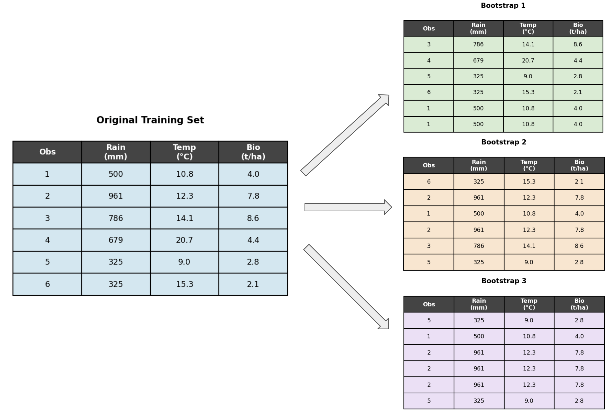
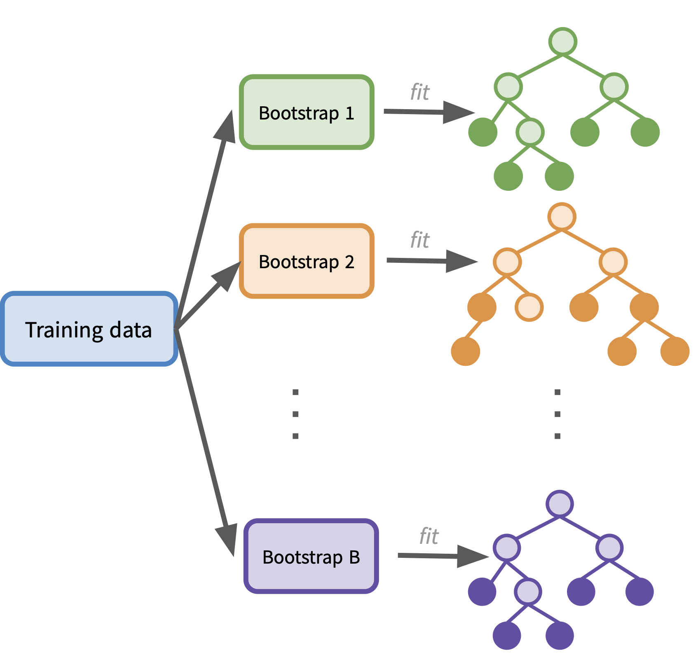
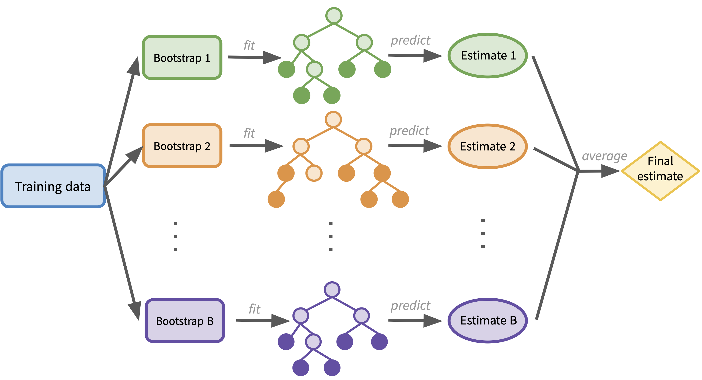
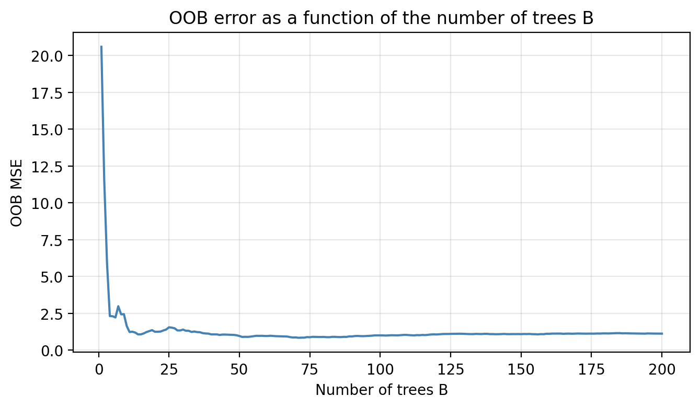
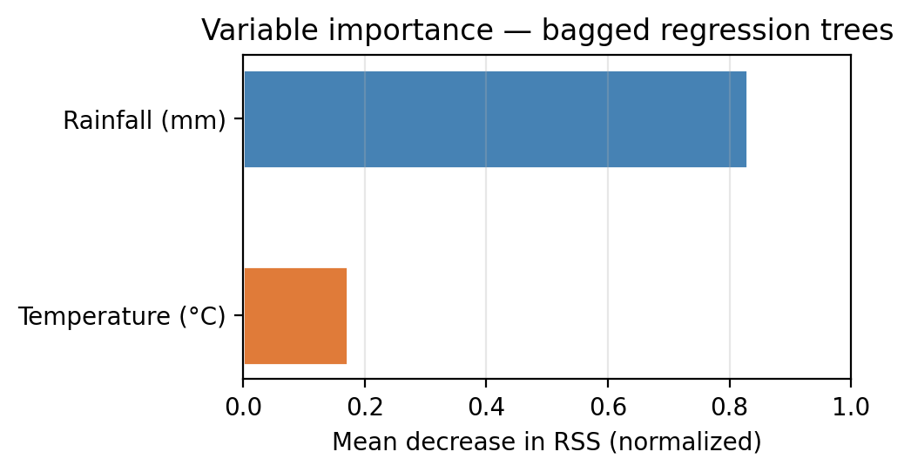
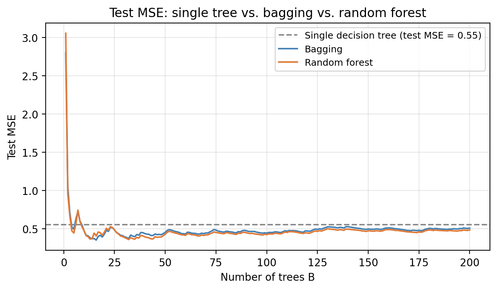

Bagging and Random Forests
In this lesson we introduce:
- Ensemble methods and why they improve on single decision trees
- Bagging (Bootstrap Aggregation): fitting many trees on bootstrap samples and averaging their predictions
- Out-of-bag error estimation: an alternative to cross-validation that comes for free with bagging
- Random forests: an extension of bagging that decorrelates trees by using a random subset of predictors at each split
These notes are based on chapter 8 of An Introduction to Statistical Learning with Applications in Python (James et al. 2023). The example data is the same synthetic dataset used in the decision tree notes. Data and code were generated with the aid of Claude Code for the purpose of this lesson.
A guiding dataset
We will use a small dataset of 22 ecological survey sites throughout this section. Each site is characterized by:
rainfall— annual precipitation (mm)temperature— mean summer temperature (°C)biomass— aboveground plant biomass (tonnes per hectare), our response variable
The plot below shows the 22 points in the dataset with the biomass measurement annotated for each point.
Ensemble methods
An ensemble method combines many simple “building block” models to obtain a single, more powerful model. Instead of relying on one model’s prediction, we aggregate many models’ predictions. The combination is usually more accurate and more stable than any individual model.
In this lesson we focus on two ensemble methods built on top of decision trees: bagging and random forests.
The variance problem in decision trees
Recall that a single decision tree suffers from high variance: small changes in the training data can lead to very different trees and very different predictions. Deep trees are especially prone to overfitting.
One general strategy for reducing variance is:
- Take many training sets from the same population
- Fit a separate model on each training set
- Average the resulting predictions
Averaging many models reduces variance without increasing bias. The averaging step is the key: the more uncorrelated the individual predictions are, the more variance reduction we get.
The challenge with this approach is that, in practice, we almost never have access to multiple independent training sets, we only have a single one. Bagging is a way around this.
Bagging
Bagging stands for Bootstrap AGGregatING. The idea is to generate many training sets from the single one we have by bootstrapping, and then average the predictions from models fit on each of those bootstrapped sets.
The bootstrap
Bootstrapping generates a new training set by sampling with replacement from the original training set. Each bootstrapped sample is the same size as the original, but some observations will appear more than once and others will be left out entirely.
The figure below is a toy example of a training set with 6 observations, and three bootstrapped versions of it. Each bootstrapped dataset was created by sampling 6 observations with replacement from the original 6. Notice how some rows are repeated and others are missing.

Bagging for regression
Bagging uses bootstrapped training sets to fit a forest of decision trees. There are two implementations depending if we are in a regression or classification scenario.
In the regression case, we use bagging to create an ensemble of regression trees by:
- Generating \(B\) bootstrapped training sets from the original training set.
- Fitting a decision tree on each bootstrapped training set.

To get a prediction on a new observation \(x\), obtaining \(B\) estimates, one from each tree:
\[\hat{f}^{*1}(x), \hat{f}^{*2}(x), \ldots, \hat{f}^{*B}(x),\]
and then average the \(B\) predictions to produce the final bagged prediction:
\[\hat{f}_{\text{bag}}(x) = \frac{1}{B} \sum_{b=1}^{B} \hat{f}^{*b}(x).\]
The diagram below illustrates this workflow:

TipCheck-in
How would you modify this workflow to use bagging for a classification problem? Draw a similar diagram and describe what changes.
TipDiscussion
The workflow is the same, but the final step changes:
- Generate \(B\) bootstrapped training sets
- Fit a decision tree classifier on each, obtaining \(B\) class predictions
- Take a majority vote across all \(B\) predictions: the final predicted class is the one that appears most often.
The diagram is identical except that the bottom box says “Majority vote” instead of “Average predictions.”
Bagging for classification
For classification problems, bagging works the same way but instead of averaging numerical predictions we take a majority vote:
Generate \(B\) bootstrapped training sets
Fit a classification tree on each bootstrapped training set
To get a prediction on a new observation \(x\), get a class prediction from each tree \[\hat{f}^{*1}(x), \hat{f}^{*2}(x), \ldots, \hat{f}^{*B}(x)\]
The final bagged prediction is the most commonly occurring class across all \(B\) trees.
\[\hat{f}_{\text{bag}}(x) = \text{mode}\left\{\hat{f}^{*1}(x), \hat{f}^{*2}(x), \ldots, \hat{f}^{*B}(x)\right\}.\]
Out-of-bag error estimation
When we fit each bootstrapped tree, not every observation ends up in that bootstrap sample. The observations left out are called the out-of-bag (OOB) observations for that tree. On average, about \(\frac{1}{3}\) of the training observations are OOB for any given tree.
This gives us a way to estimate test error without using cross-validation:
- For each observation \((x_i, y_i)\) in the training set, identify all trees for which it was OOB (i.e., not used during training of that tree). On average this is about \(B/3\) trees.
- Use only those trees to make a prediction for \(x_i\): average their predictions (regression) or take a majority vote (classification) to get a an OOB prediction for \(\hat{y}_i\) for \(x_i\).
- Repeat for all \(n\) training observations. We now have one OOB prediction per training observation.
- Compute MSE (regression) or classification error (classification) from these OOB predictions. This is the OOB error.
The OOB error is a valid estimate of test error because each observation is predicted only by trees that were not trained on it. It is analogous to leave-one-out cross-validation, but at no extra computational cost.
TipCheck-in
- Suppose your model has three trees fit on the bootstrap samples 1,2 and 3 below. For which trees would observation 4 be an OOB observation?
- Why is the OOB error a valid estimate of the test error and not the training error?
- If we use a very small \(B\), would you expect every training sample to be OOB for some tree? Would you then trust the OOB error estimate? Why or why not?
TipDiscussion
- Observation 4 would be an OOB observation for the trees trained using boostrap samples 2 and 3.
- Because each observation’s OOB prediction is made only by trees that did not use that observation during training. The prediction is made on “unseen” data from those trees’ perspective.
- No. With \(B = 5\) trees, some observations may never be OOB (i.e., they were included in every bootstrap sample). For those observations we would have no OOB prediction at all! With small \(B\) the estimate is noisy and potentially inaccurate.
Choosing the number of trees B
Unlike tree depth, \(B\) is not a tuning parameter in the usual sense because using a very large \(B\) does not cause overfitting. In practice we pick a value large enough that the OOB error stabilizes and stops decreasing. The plot below shows OOB MSE for our example dataset as a function of \(B\):

The error decreases quickly and levels off. Adding more trees beyond that plateau does not hurt, but it also does not help. Pick a B where the curve is already flat.
Variable importance
One of the advantages of a single decision tree is its interpretability: we can look at the tree diagram and understand which variables drive the splits. With bagging we lose this direct interpretability since we now have \(B\) different trees.
However, we can still extract a useful overall summary of variable importance across all \(B\) trees:
- Regression: every time for each predictor, record the total reduction in RSS achieved by splits on that predictor, summed across all trees and all splits. Average this total reduction over all \(B\) trees.
- Classification: the same, but using the Gini impurity reduction instead of RSS reduction.
Predictors with large average reductions are the most important for the model’s predictions.
TipCheck-in
Consider the following variable importance plot:

- Which predictor is most important for predicting biomass in this dataset?
- When creating the trees for the ensenmble model, what predictor would you expect to be used in the first split for most of them?
TipDiscussion
- Rainfall has higher importance in this dataset, meaning splits on rainfall reduce RSS more on average across all trees.
- The root node will for most trees will be split on rainfall first.
Random forests
Random forests build on bagging with one additional twist designed to decorrelate the trees in the ensemble.
Recall the bagging procedure: we fit \(B\) trees on \(B\) bootstrapped samples and average their predictions. If one predictor is very strongly associated with the response, almost every tree will use that predictor as the top split. The relative importance of the predictors will continue as the tree gorw. As a result, the \(B\) trees will look similar to each other, i.e. they will be correlated. Averaging correlated predictions does not reduce variance as much as averaging uncorrelated ones.
Random forests break this correlation by introducing randomness at each split:
- At each candidate split in each tree, instead of considering all \(p\) available predictors, we randomly select a subset of \(m < p\) predictors and only consider those \(m\) as candidates for that split.
- A fresh random subset of \(m\) predictors is drawn at every split.
- A typical default is \(m = \sqrt{p}\) for classification and \(m = p/3\) for regression.
By restricting which predictors can be used at each split, no single strong predictor can dominate every tree. Weaker predictors get a chance to contribute, and the resulting trees are less correlated with each other. Averaging less-correlated predictions produces a larger reduction in variance.
TipCheck-in
Suppose you are building one tree in a random forest with predictors {rainfall, temperature, elevation, soil moisture} (\(p = 4\), \(m = 2\)). At the root node the algorithm randomly selects {rainfall, elevation} and splits on rainfall. At the next node, which predictors are available to split on?
TipDiscussion
A new random sample of 2 predictors is drawn: it could be any pair, including ones used before. The previous split does not restrict future splits.
Random forests outperform bagging most when the dataset has one or a few dominant predictors: bagged trees become too similar to each other, while random forests force diversity. When all predictors are equally weak or the dataset is very small, the benefit of decorrelation is smaller.

The number of predictors considered at each split, \(m\), is a hyperparameter that controls the degree of decorrelation. Choosing a small \(m\) means more randomness, more decorrelated trees, lower variance but potentially higher bias
A small value of \(m\) is especially helpful when there are many uncorrelated predictors, as it gives each one a fair chance to contribute. Cross-validation can be used to select \(m\) when performance is sensitive to its choice.
TipCheck-in
If \(m = p\), how does random forest relate to bagging?
TipDiscussion
When \(m = p\), random forests reduce to bagging exactly — there is no restriction on which predictors can be used, so every tree uses the full set at every split.
References
James, Gareth, Daniela Witten, Trevor Hastie, Robert Tibshirani, and Jonathan E. Taylor. 2023. An Introduction to Statistical Learning: With Applications in Python. Springer Texts in Statistics. Cham: Springer.